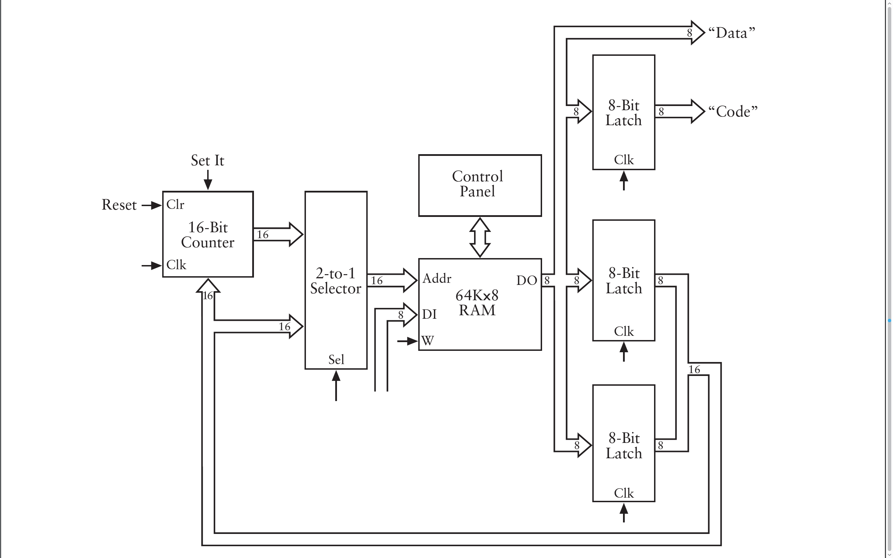

Software and Programming Language Theory
Introduction
History of programming languages
Classification of programming languages
Instructor — Maxim A. Krivchikov, senior researcher, Lomonosov Moscow State University
Quick recap
Previous semester — Formal models of computation
- the mathematical point of view to the problem of software verification
- evolution of the idea of type in the foundations of mathematics
Present semester — Formal models of programming languages
- what is the current state of the art in programming languages
- how to describe actual programming languages in mathematical terms
- is the convergence between “mathematical” and “software engineering” approaches possible
How many programming languages you have acquaintance with?
(to have acquaintance with programming language ≈ can write something more sophisticated than Hello World in less than an hour)
GitHub can detect 343 programming languages
In 2019 it was 316, in 2018 — 299, in 2017 — 277!
This figure is the lower bound of the count of programming languages which are used by more than one person.
Source: https://github.com/github/linguist/tree/master/vendor/grammars
Programming language
A system of precisely defined symbols and rules devised for writing computer programs. — Oxford Dictionary
An artificial language used to write instructions that can be translated into machine language and then executed by a computer. — The American Heritage Dictionary of the English language
History of programming languages
Sources for the further research:
- C. Petzold. Code: The Hidden Language of Computer Hardware and Software. Microsoft Press, 2000.
- В.А. Васенин, М.А. Кривчиков. Формальные модели программ и языков программирования. Часть 1. Библиографический обзор 1930—1989 гг.
- http://cdn.oreillystatic.com/news/graphics/prog_lang_poster.pdf
- https://en.wikipedia.org/wiki/Timeline_of_programming_languages
- Historic machine emulators http://www.historicsimulations.com/ZuseZ3.html
Generation-based history and classification
Zuse Z3
 Image source: Wikimedia Foundation
Image source: Wikimedia Foundation
Zuse Z3 (1941)

Image source: Deutsches Museum
Zuse Z3

Image source: https://www.linuxvoice.com/konrad-zuse-nearly-the-german-turing-5/
Some of the early machines (not Zuse Z3) were programmed by rewiring. These machines are not actually automatic programmable computers.
Machine code
Binary representation of elementary instructions which can be executed directly on CPU.
1GL (first-generation programming languages)
See also: Bootstrapping a simple compiler from nothing - 1GL to 3GL
http://homepage.ntlworld.com/edmund.grimley-evans/bcompiler.html
https://github.com/smtlaissezfaire/bcompiler
# _start:
e8 25 00 00 00 # call gethex
c1 e0 04 # sall $4,%eax
50 # push %eax
e8 1c 00 00 00 # call gethex
01 04 24 # add %eax,(%esp)
e8 03 00 00 00 # call putchar
58 # pop %eax
eb e7 # jmp _start
# +25
# putchar:
31 db # xor %ebx,%ebx
43 # inc %ebx
8d 4c 24 04 # lea 4(%esp),%ecx
89 da # mov %ebx,%edx
b8 04 00 00 00 # mov $4,%eax
cd 80 # int $0x80
c3 # retSimple CPU

Source: C.Petzold. Code
Microcode
Modern CPUs are not hardwired. The connections between logic units at the opcode execution time are maintained by the microcode — sequence of bit packages describing the signals at each clock.

{kind=link}
2GL (second-generation programming languages)
Opcode (mnemonic): add, sub, jmp, je, and, mov
Operand: register, constant value, flag, memory, label
Label: get offset at the specified point
global strlen
; int strlen(const char *string);
strlen:
push edi
sub ecx, ecx
mov edi, [esp+8]
not ecx
sub al, al
cld
repne scasb
not ecx
pop edi
lea eax, [ecx-1]
retzstr_count:
mov ecx, -1
.loop:
inc ecx
cmp byte [eax+ecx], 0
jne .loop
.done:
retAssembly languages
Assembly instructions are converted into the machine code.
http://www.c-jump.com/CIS77/CPU/IsaDesign/lecture.html
Simplifed x86-like instruction encoding

Macroassembler
"2.5 generation" language
Macroassemblers allow macros: special directives with parameters which can be substituted at the assembly time.ForLp macro LCV, Start, Stop
ifndef $$For&LCV&
$$For&LCV& = 0
else
$$For&LCV& = $$For&LCV& + 1
endif
mov ax, Start
mov LCV, ax
MakeLbl $$For&LCV&, %$$For&LCV&
mov ax, LCV
cmp ax, Stop
jgDone $$Next&LCV&, %$$For&LCV&
endm
Next macro LCV
inc LCV
jmpLoop $$For&LCV&, %$$For&LCV&
MakeLbl $$Next&LCV&, %$$For&LCV&
endmForLp I, 0, 15
ForLp J, 0, 6
ldax A, I, J ;Fetch A[I][J]
mov bx, 15 ;Compute 16-I.
sub bx, I
ldax b, bx, J, imul ;Multiply in B[15-I][J].
stax x, J, I ;Store to X[J][I]
Next J
Next IHigh-level programming languages
3GL (third-generation programming languages)
Third-generation programming languages feature machine-independence, complex data and code constructions.
typedef struct timespec {
time_t tv_sec; /* seconds */
long tv_nsec; /* nanoseconds */
};
int main(int argc, char **argv) {
int clk_id = CLOCK_REALTIME;
const uint TIME_FMT = strlen("2012-12-31 12:59:59.123456789") + 1;
char timestr[TIME_FMT];
struct timespec ts, res;
for (int i = 0; i < 100; i++) {
clock_getres(clk_id, &res);
clock_gettime(clk_id, &ts);
}
if (timespec2str(timestr, TIME_FMT, &ts) != 0) {
printf("timespec2str failed!\n");
return EXIT_FAILURE;
} else {
unsigned long resol = res.tv_sec * NANO + res.tv_nsec;
printf("CLOCK_REALTIME: res=%ld ns, time=%s\n", resol, timestr);
return EXIT_SUCCESS;
}
}4GL: Data querying and manipulation languages
Fourth-generation languages are declarative, mostly concerned with data manipulation.select quartile,
min(spend) as min,
max(spend) as max
from (
select spend, ntile(4)
over (order by spend asc)
quartile
from (
select user_id,
sum(price) as spend
from purchases
group by 1
) user_spend
) user_spend_quartiles
group by 1
order by ntile asc
SQL (without cursors and imperative extensions) is probably the only successful general fourth generation language.
4GL: Data querying and manipulation languages
Also include: report and form-generation languages (ABAP, dBase, FoxPro), wide range of domain specific declarative languages (Wolfram Language, AMPL, MATLAB).
Some features of modern high-level programming languages take roots in 4GL (e.g. list comprehensions).
Some disadvantages of 4GL:
- syntax is very verbose, unneccessarily mimics natural languge
- complicated debugging
- unpredictable performance (programs in 4GL are, usually, orders of magnutude slower than high-performance optimized implementation in general-purpose programming language)
- complicated development process, compatibility problems
5GL: Logical inference and constraint-based
Fifth-generation languages were the ultimate dream of software engineers in 1980s :)
Example: Prolog, Datalog
Programmer specifies the model and formulates the task. The runtime solves the specified constraints using some knowledge-inference engines (first-order inferene, frame inference).
You can try Prolog here: http://swish.swi-prolog.org/example/houses_puzzle.pl
Einstein riddle (who keeps zebra?) in Prolog
neigh(Left, Right, List) :-
List = [Left | [Right | _]];
List = [_ | [Left | Right]].
zebraowner(Houses, ZebraOwner):-
member([englishman, _, red], Houses),
member([spanish, jaguar, _], Houses),
neigh([_, snail, _], [japanese, _, _], Houses),
neigh([_, snail, _], [_, _, blue], Houses),
member([ZebraOwner, zebra, _], Houses),
member([_, _, green], Houses).
zebra(X) :- zebraowner([_, _, _], X).zebra(Owner).
> Owner = japaneseII. Influential programming languages
First widespread programming languages
Fortran, Cobol, Algol, Lisp
Languages which introduced some important concepts
ML, Prolog, Smalltalk, Forth, APL, Refal, Haskell
FORTRAN: the first widely-used high-level language
FORmula TRANslator. John Backus, IBM, 1954-57
C AREA OF A TRIANGLE - HERON'S FORMULA
C INPUT - CARD READER UNIT 5, INTEGER INPUT
C OUTPUT - LINE PRINTER UNIT 6, REAL OUTPUT
C INPUT ERROR DISPLAY ERROR OUTPUT CODE 1 IN JOB CONTROL LISTING
INTEGER A,B,C
READ(5,501) A,B,C
501 FORMAT(3I5)
IF(A.EQ.0 .OR. B.EQ.0 .OR. C.EQ.0) STOP 1
S = (A + B + C) / 2.0
AREA = SQRT( S * (S - A) * (S - B) * (S - C) )
WRITE(6,601) A,B,C,AREA
601 FORMAT(4H A= ,I5,5H B= ,I5,5H C= ,I5,8H AREA= ,F10.2,12HSQUARE UNITS)
STOP
ENDFortran is alive
Fortran 2018 was released on November 28, 2018. It specifies interoperability with C programming language and parallel computing intrinsics.
http://www.fortran.bcs.org/2012/nm_talk.pdf
do i = this_image(), limit, num_images()
pi = pi + (-1)**(i+1) / real( 2*i-1, kind=rk )
end do
sync all ! global barrier
if (img .eq. 1) then
do i = 2, nimgs
pi = pi + pi[i]
end do
pi = pi * 4.0_rk
end ifEquivalent to MPI code:
COBOL: COmmon Business-Oriented Language
Grace M. Hopper, CODASYL consortium, 1959.
One of the first languages initially designed without any academic (computer science) influence.
Nowadays, as I have probably already mentioned in an introduction of the previous course, COBOL programs represent the canonical example of legacy code: more than a half of an enterprises (in US) use several billions lines of COBOL code in their everyday activity. The migration cost is very high, so in short future COBOL share won't drop significantly.
COBOL: 4GL prototype
RD sales-report
PAGE LIMITS 60 LINES
FIRST DETAIL 3
CONTROLS seller-name.
01 TYPE PAGE HEADING.
03 COL 1 VALUE "Sales Report".
03 COL 74 VALUE "Page".
03 COL 79 PIC Z9 SOURCE PAGE-COUNTER.
01 sales-on-day TYPE DETAIL, LINE + 1.
03 COL 3 VALUE "Sales on".
03 COL 12 PIC 99/99/9999 SOURCE sales-date.
03 COL 21 VALUE "were".
03 COL 26 PIC $$$$9.99 SOURCE sales-amount.
01 invalid-sales TYPE DETAIL, LINE + 1.
03 COL 3 VALUE "INVALID RECORD:".
03 COL 19 PIC X(34) SOURCE sales-record.
01 TYPE CONTROL HEADING seller-name, LINE + 2.
03 COL 1 VALUE "Seller:".
03 COL 9 PIC X(30) SOURCE seller-name.OPEN INPUT sales, OUTPUT report-out
INITIATE sales-report
PERFORM UNTIL 1 <> 1
READ sales
AT END
EXIT PERFORM
END-READ
VALIDATE sales-record
IF valid-record
GENERATE sales-on-day
ELSE
GENERATE invalid-sales
END-IF
END-PERFORM
TERMINATE sales-report
CLOSE sales, report-out
.ABAP (contemporary COBOL successor, SAP ERP)
SAP SE, ~1981-83.
REPORT ZSOURCE2307.
* List of the current program
WRITE / 'I am program ZSOURCE2307'.
* External perform
PERFORM EXTFORM IN PROGRAM ZSOURCE2308.
Program 2
REPORT ZSOURCE2308.
* Form definition
FORM EXTFORM.
if sy-cprog <> 'ZSOURCE2307'.
WRITE / 'I am extform in program ZSOURCE2308.'.
endif.
ENDFORM.ALGOL
ALGOrithmic Language, first implementation in 1958 (known as International Algebraic Language, IAL).
Developed by joint committee of American and Soviet computer scientists, after standartization was immediately adopted as GOST standart in USSR. John Backus (one of FORTRAN creators), John McCarthy (creator of LISP), Peter Naur (creator of BNF grammar specification formalism), Edsger Dijkstra (no need to introduce :) took part in the original development. Algol 60 and Algol 68 followed.
Code examples in the following slides are in Algol 68, which is different from the most widespread Algol 60.
ALGOL
proc abs max = ([,]real a, ref real y, ref int i, k)real:
comment The absolute greatest element of the matrix a, of size ⌈a by 2⌈a
is transferred to y, and the subscripts of this element to i and k; comment
begin
real y := 0; i := ⌊a; k := 2⌊a;
for p from ⌊a to ⌈a do
for q from 2⌊a to 2⌈a do
if abs a[p, q] > y then
y := abs a[p, q];
i := p; k := q
fi
od
od;
y
end # abs max #ALGOL
ref vector row = m[2,]; # define a ref (pointer) to the 2nd row #
ref vector col = m[,2]; # define a ref (pointer) to the 2nd column #
mode node = union (real, int, compl, string),
list = struct (node val, ref list next);
node n := "1234";
# tagged unions #
case n in
(real r): print(("real:", r)),
(int i): print(("int:", i)),
(compl c): print(("compl:", c)),
(string s): print(("string:", s))
out print(("?:", n))
esacprio max = 9;
# Custom operators with overloading! #
op max = (int a,b) int: ( a>b | a | b );
op max = (real a,b) real: ( a>b | a | b );
op max = (compl a,b) compl: ( abs a > abs b | a | b );
op max = ([]real a) real:
(real out := a[lwb a];
for i from lwb a + 1 to upb a do ( a[i]>out | out:=a[i] ) od;
out)LISP
dynamic typing, functional programming, macros
Introduced by John McCarthy in 1958, based on lambda-calculus. One of the most popular languages for AI development in time span from 1960s to the end of 1980s.
Today there are 3 widespread dialects:
- Scheme (minimal and extensible, see also "Lambda: the ultimate ..." papers)
- Common LISP (large system with rich standard library)
- Clojure (LISP dialect for Java ecosystem)
LISP
(defun get-from-list(list pred)
(let ((ans (first list)))
(do ((i 1 (1+ i)))
((>= i (length list)) ans)
(when (funcall pred (nth i list) ans)
(setf ans (nth i list))))))
(defun get-max(list)
(get-from-list list #'>))
(defun get-min(list)
(get-from-list list #'<))Macros make possible to define "lazy" and "short-circuiting" operators.
(defmacro multi-run (times &body algo-call)
`(loop for ,(gensym) below ,times collect (progn ,@algo-call)))
(multi-run 50 (solve-prob test-case (make-instance 'tabu-search)))Smalltalk: object-oriented programming
Alan Kay et al., Xerox PARC, 1972
Message-based, prototype-based object-oriented programming
| rectangles aPoint collisions |
rectangles := OrderedCollection
with: (Rectangle left: 0 right: 10 top: 100 bottom: 200)
with: (Rectangle left: 10 right: 10 top: 110 bottom: 210).
aPoint := Point x: 20 y: 20.
collisions := rectangles select: [:aRect | aRect containsPoint: aPoint].Prolog: logical (constraint-based) programming
Alain Colmerauer, 1972. (already mentioned at 5GL section)
Forth: stack-based programming
Charles H. Moore, 1970. https://skilldrick.github.io/easyforth/#snake
: move-up -1 snake-y-head +! ;
: move-left -1 snake-x-head +! ;
: move-down 1 snake-y-head +! ;
: move-right 1 snake-x-head +! ;
: move-snake-head direction @
left over = if move-left else
up over = if move-up else
right over = if move-right else
down over = if move-down
then then then then drop ;
\ Move each segment of the snake forward by one
: move-snake-tail 0 length @ do
i snake-x @ i 1 + snake-x !
i snake-y @ i 1 + snake-y !
-1 +loop ;APL: array programming
Kenneth Iverson, IBM, 1964. Array Programming Languages syntax uses special graphical symbols to define array operations. Example program (Game of Life simulator):
life←{↑1 ⍵∨.∧3 4=+/,¯1 0 1∘.⊖¯1 0 1∘.⌽⊂⍵}
Check whether an integer is a power of 2 without using +,- operations
0=1|2⍟⎕
i.e. 0 = mod(log(input(),2),1)
Unicode standard has some APL-specific symbols.
Advantage: extremely concise (short) programs. Its ASCII-successor J is very popular in "coding golf" competitions.
Disadvantage: unreadable programs.
APL example
Prime numbers example (from Wikipedia):
(~R∊R∘.×R)/R←1↓ιR
Executed from right to left, this means:
- ιR (Iota) = integers from 1 to R (if R = 6, ιR is 1 2 3 4 5 6)
- Drop first element of this vector (↓ function), i.e. 1. So 1↓ιR is 2 3 4 5 6
- Set R to the new vector (←, assignment primitive), i.e. 2 3 4 5 6
- The / compress function is dyadic (binary) and the interpreter first evaluates its left argument (entirely in parentheses):
- Generate outer product of R multiplied by R (°.× operator)
- Build a vector the same length as R with 1 in each place where the corresponding number in R is in the outer product matrix (∈, set inclusion or element of or Epsilon operator), i.e. 0 0 1 0 1
- Logically negate (not) values in the vector (change zeros to ones and ones to zeros) (∼, logical not or Tilde operator), i.e. 1 1 0 1 0
- Select the items in R for which the corresponding element is 1 (/ compress operator), i.e. 2 3 5
Refal (REcursive Functions ALGOrithmic Language)
Created in Soviet Union in 1968 by Valentin F. Turchin.
Recursive term rewriting language, based on Markov Algorithms. Original concept of Refal was the metalanguage for programming language syntax and semantics. Features advanced pattern-matching.
Example: Palindrome
Pal { = True;
s.1 = True;
s.1 e.2 s.1 = <Pal e.2>;
e.1 = False; }Implementations:
- CMC MSU Refal-2 https://github.com/cmc-msu-ai/refal
- BMSTU Refal → C compiler
Refal Example: untyped lambda-calculus interpreter
Wait = <Card> = ;
Subst {
s.var t.value s.var e.rest s.x1
= t.value <Subst s.var t.value e.rest> ;
s.var t.value (λ s.var e.body) e.rest
= (λ s.var e.body) <Subst s.var t.value e.rest> ;
s.var t.value (e.inside) e.rest
= (<Subst s.var t.value e.inside>)
<Subst s.var t.value e.rest> ;
s.var t.value s.other e.rest
= s.other <Subst s.var t.value e.rest> ;
s.var t.value = ;
}
Beta {
(( e.double )) e.rest = Step (e.double) e.rest ;
(λ s.var '.' e.body) t.value e.rest =
Step <Subst s.var t.value e.body> e.rest ;
(λ s.var '.' e.body) =
<Beta e.body> : s.state e.result =
s.state (λ s.var '.' e.result) ;
(e.1) e.rest =
<Beta e.1> => {
Step e.result = Step (e.result) e.rest ;
Stuck e.result = <Beta e.rest>
: s.state e.result2 =
s.state (e.result) e.result2 ;
} ;
t.neutral e.rest =
<Beta e.rest> : s.state e.result =
s.state t.neutral e.result ;
= Stuck;
}
Loop {
e.val =
<Beta e.val> : s.state e.res =
<Print s.state> <Print <PPrint (' ') e.res>> =
s.state => {
Step = <Loop <Wait> e.res> ;
Stuck = <Print DONE> ;
}
}
Omega = (λ x '.' x x) (λ y '.' y y) ;
Y = (λ yF '.' (λ yX '.' yF (yX yX)) (λ yX '.' yF (yX yX))) ;
Comp = (λ f '.' (λ g '.' (λ x '.' (g (f x)))));
$ENTRY Go {
= <Print <PPrint () <Y> <Fact> 3>>
<Loop <Y> <Fact> 3> ;
}Homework assignments
Task 1.1 (at most 7* in total, at most one language from category, you can use modern implementations/dialects)
Implement something non-trivial (more than 200 lines in equivalent C code) in languages from list:
- Forth **
- APL, J **
- Refal **
- Idris, Agda, Coq **
- Prolog **
- Scheme, Racket, Clojure, Common LISP or Emacs LISP **
- Haskell *
- Smalltalk *
- Fortran *
- Algol *
- Ada *